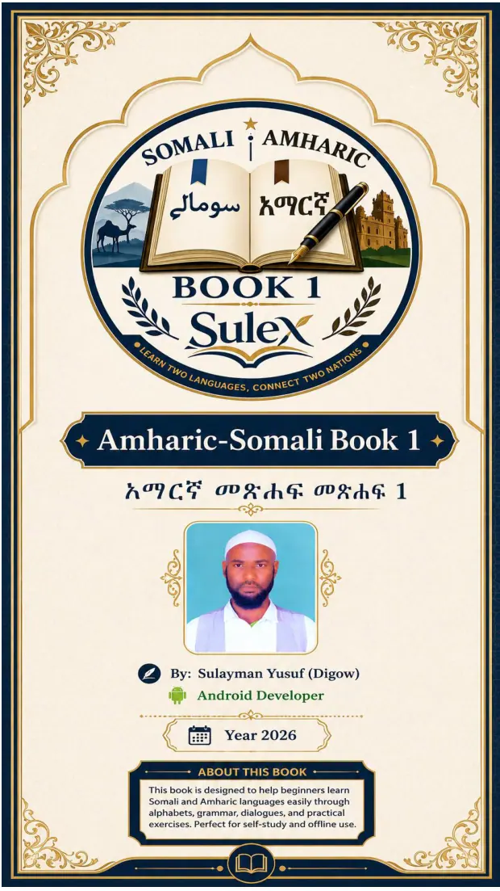
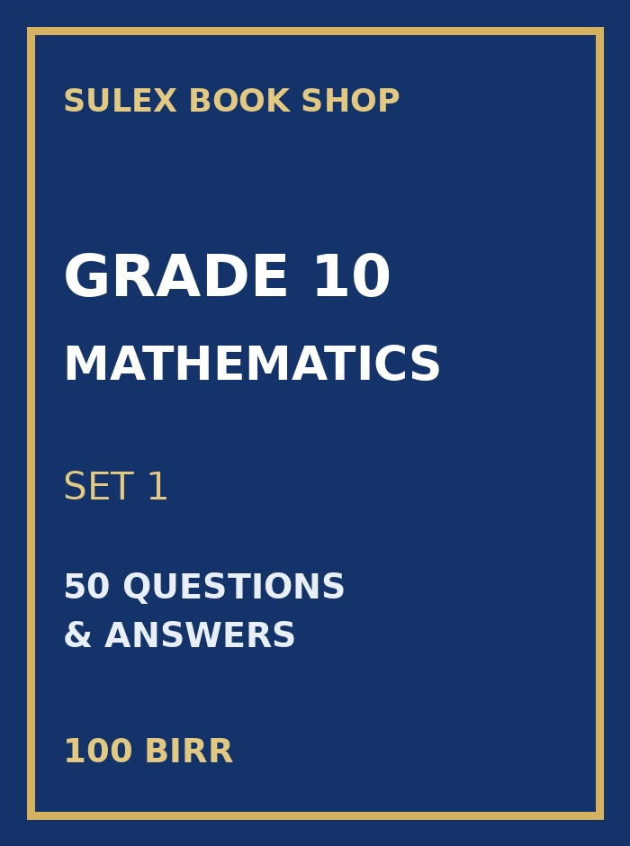

Sulex Book 1 – Af-Amxaari & Af-Soomaali
Buug luuqadeed oo 99 bog ah.
300 BirrFur dukaanka →Buugaag iyo imtixaanno tababar oo online lagu iibiyo, Itoobiya.
Hoos ka eeg buugaagta la soo bandhigay. Lacag-bixinta iyo furitaanka akhriska waxaa lagu sameeyaa website-ka Sulex Book Shop.

Buug luuqadeed oo 99 bog ah.
300 BirrFur dukaanka →Joornaal taariikheed oo ku saabsan Adwa.
100 BirrFur dukaanka →
50 su’aalood iyo jawaabo sharaxaad leh.
100 BirrFur dukaanka →